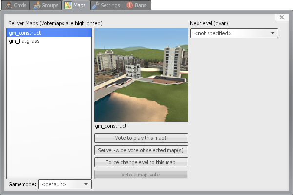
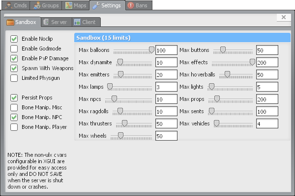
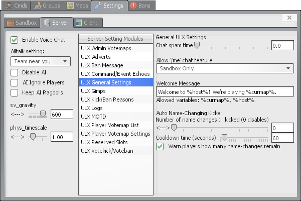

XGUI images
xgui bans
xgui cmds asay
xgui groups manage permissions
xgui groups manage
xgui maps

xgui module staff tab
xgui settings client xgui settings

xgui settings sandbox

xgui settings server ulx admin votemaps
xgui settings server ulx adverts
xgui settings server ulx ban message
xgui settings server ulx command event echoes
xgui settings server ulx general settings

xgui settings server ulx gimps
xgui settings server ulx kick ban reasons
xgui settings server ulx logs
xgui settings server ulx motd
xgui settings server ulx player votemap list
xgui settings server ulx player votemap settings
xgui settings server ulx reserved slots
xgui settings server ulx votekick voteban